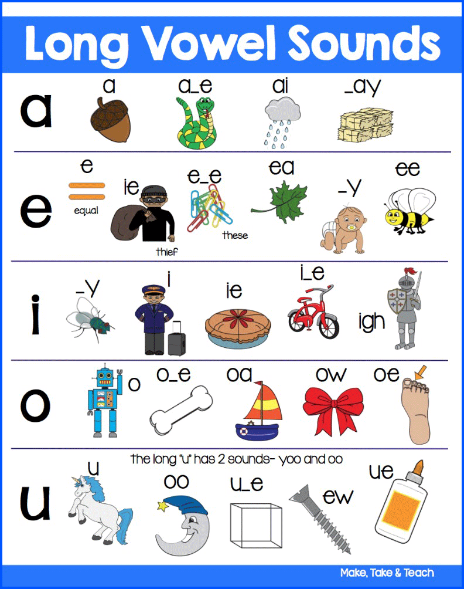
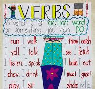
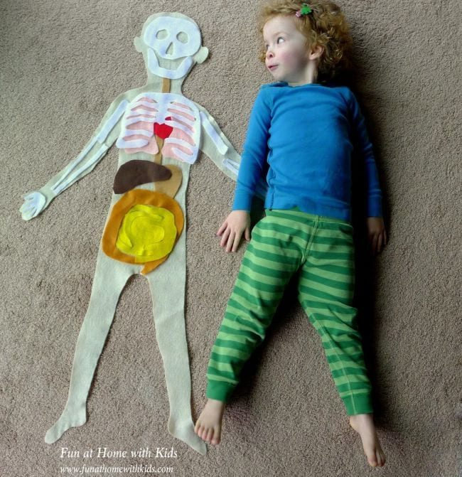

🧠 Week 3 of 35 — Unit 1: The Amazing Body
Week #: 3 of 35 (Unit 1, week 3 of 3) Dates: Sep 13 – Sep 17, 2026 | Unit: Unit 1: The Amazing Body | |
Newsletter: Newsletter Sep 13 - Sep 17 2026
Unit Padlet
Unit 2: Grammar (From Words to Sentences)
Unit 2: Reading (Analyzing Literature)
✍️ Unit 2: Writing (Procedural Writing)
Unit 2: Explorers (Changes in Matter)
Practice Websites
Grammar Quest - Daily Oral Language
Maths Quest Pro - Master Your Math Facts!
Extra Math Resources
Unit 1: Math (Place Value and Operations)
Unit 2: Math (Measurement and Data)
Unit 4: Math (Multiplication and Division)
Unit 6: Math (Algebra, FDP, Fractions)
Class | Sunday | Monday | Tuesday | Wednesday | Thursday |
This week's updates / notes: | Benchmark Testing Starts - Dibels - Raz - Ufli Grey italic text = added in the October 2026 template update (not in the original plan). | No notes for this day. | No notes for this day. | No notes for this day. | No notes for this day. |
Morning Meeting / SEL | PLG: Collaborator, Respectful, Communicator | PLG: Collaborator, Respectful, Communicator | PLG: Collaborator, Respectful, Communicator | PLG: Collaborator, Respectful, Communicator | PLG: Collaborator, Respectful, Communicator |
Literacy: Vocabulary & Spelling Standards | CC L.5.4, L.5.6 · EE.L.5.4, EE.L.5.6 | CC L.5.4, L.5.6, L.5.2.E, RF.5.3 · EE.L.5.4, EE.L.5.6, EE.L.5.2.H, EE.RF.5.3 | CC L.5.4, L.5.6 · EE.L.5.4, EE.L.5.6 | CC L.5.4, L.5.6 · EE.L.5.4, EE.L.5.6 | CC L.5.4, L.5.6, L.5.2.E, RF.5.3 · EE.L.5.4, EE.L.5.6, EE.L.5.2.H, EE.RF.5.3 |
Literacy: Vocabulary & Spelling Activities/Tasks (Differentiation) Routine: give the definition first (no guessing) → students share where they might use it, similar/different words. Morphology, examples/non-examples, synonyms/antonyms & more on the vocabulary cards: Vocabulary Padlet (incl. Spelling: words Mon · test Thu) | G5: cheetah — A large, slender African cat with a tawny coat and black spots, known for being the fastest land animal. G3: select — To carefully choose from a group of options. Unit: regulate — To control or manage something so that it works correctly. | G5: sculpture — A three-dimensional work of art made by carving, molding, or assembling materials. G3: soar — To fly or rise high in the air; to increase rapidly. Unit: audience — A group of people gathered to watch or listen to a performance, speech, or presentation. Spelling — introduce Week 3 lists (practice all week). Low (Building Spelling Skills, List 3): his, is, an, and, can, all, call, land, hand, small High (Building Spelling Skills, List 3): fact, began, clasp, rapid, able, later, space, stranger, grade, display, main, explain, freight, neighbor, weigh, vein, April, ankle | G5: volcanoes — Mountains or hills with openings through which lava, rock, and gases erupt from the Earth's interior. G3: permit — To allow or give permission for something to happen. Unit: digestion — The way the body breaks down food so it can be used for energy. | G5: praised — Expressed warm approval or admiration for someone's achievements. G3: struggle — To try very hard to do something difficult. Unit: deliberately — In a way that is done on purpose and with thought. | G5: practiced — Performed an activity or skill repeatedly in order to improve. G3: intend — To have a plan or purpose in mind. Unit: independent — Not depending on another; able to stand alone or function by itself. |
Literacy: Vocabulary & Spelling Assessment (Differentiation) | Quick check: Use today's word in a spoken or written sentence. Low: match the word to a picture or definition. Mid: complete a sentence frame. High: write an original sentence. | Quick check: Use today's word in a spoken or written sentence. Low: match the word to a picture or definition. Mid: complete a sentence frame. High: write an original sentence. | Quick check: Use today's word in a spoken or written sentence. Low: match the word to a picture or definition. Mid: complete a sentence frame. High: write an original sentence. | Quick check: Use today's word in a spoken or written sentence. Low: match the word to a picture or definition. Mid: complete a sentence frame. High: write an original sentence. | |
Literacy: Reading Standards | CC RF.5.3, RF.5.4 · EE.RF.5.3, EE.RF.5.4 | CC RF.5.3, RF.5.4 · EE.RF.5.3, EE.RF.5.4 | CC RF.5.3, RF.5.4 · EE.RF.5.3, EE.RF.5.4 | CC RF.5.3, RF.5.4 · EE.RF.5.3, EE.RF.5.4 | CC RF.5.3, RF.5.4 · EE.RF.5.3, EE.RF.5.4 |
Literacy: Reading Activities/Tasks (Differentiation) | OBJ: Students will become familiar with the classroom environment. Running record Testing (2-3 Students) Guided Reading: Begin long A /a/. Mini lesson on the different spellings (a_e, ai, ay). Discuss with students where you are likely to use each spelling (ai if in the middle of a word, ay if at the end of a word). Have students practice with whiteboards. Create a class Anchor Chart: LONG A - baby, tape, snail, tray   Seesaw- ai vs ay practice with sentences SeeSaw- Long A SeeSaw- Long A Word Build with silent e SeeSaw- Long A Word Build SeeSaw- Word Sort with Long A KG IXL- Find Long A Review Syllabication- usually every syllable in the English language has at least 1 vowel. Try to avoid clapping; show students how to use their mouths instead, counting every time their mouth drops/opens as a syllable. Practice some words. SeeSaw Activities: Counting syllables SeeSaw · Syllables picture sort Rotations: long a center activities and independent work · Long vs. short vowel sort · Long a activities (inc. bingo) · A_e Seesaw · A_e Seesaw · ai/ay word sort SeeSaw · ai/ay write the word (word bank included) SeeSaw · a_e/ai/ay word sort and read SeeSaw · Decodable text hub Previous Week Rotation: No prep phonics · Number word packet · Color word packet · Roll and Write My Words · Sight Word Searches · Syllables with pictures · Syllables without pictures (Split the line) · Syllable Sort · Syllable Sort (Pink) · G3- IXL EASY Read Multi-Syllable Words Short Vowel Review- short vowel reader's theater · Decodable text hub Differentiation: Lower: SeeSaw, Syllables, Syllables 2; Higher: SeeSaw | OBJ: Students will learn about school and classroom procedures. Running record Testing (2-3 Students) Guided Reading: Review (short vowels, syllabication and long A). Rotations: Low/medium: Syllables Picture Sort · Medium/High: Higher: Syllabication Differentiation: Lower: Syllables Picture Sort | OBJ: Students will create a poster with facts about themselves. Running record Testing (2-3 Students) Guided Reading: LONG E - Teach long E spellings - me, beach, tree, key, pony IXL G2- Spell words with long E IXL G3- Spell words with long E SeeSaw- Long E sort SeeSaw- Build words with long E Rotations: See list from Sunday or the differentiation section below. Differentiation: Lower: How Many Syllables? | OBJ: Students will learn about school and classroom procedures. OBJ: Students will discuss, collaborate, and create classroom agreement/rules. Running record Testing (2-3 Students) Guided Reading: Review (short vowels, syllabication, long A, and long E). Rotations: See list from Sunday or the differentiation section below. Differentiation: | OBJ: Students will express their personal interest. Running record Testing (Make-up Assessments) Guided Reading: Review/Catch-up. LONG I - Teach long I spellings - tiger, kite, light, fly Scratch and read long i seesaw Choose the correct spelling Seesaw Rotations: See list from Sunday or the differentiation section below. Differentiation: |
Literacy: Reading Assessment (Differentiation) | Assessment: RAZ Reading, phonemic awareness and phonics assessment | Assessment: RAZ Reading, phonemic awareness and phonics assessment | Assessment: RAZ Reading, phonemic awareness and phonics assessment | Assessment: RAZ Reading, phonemic awareness and phonics assessment | Assessment: RAZ Reading, phonemic awareness and phonics assessment |
Literacy: Writing / Language Standards (Language Sun & Tue · Writing Mon & Wed · Thu catch-up) | CC L.5.1.B · EE.L.5.1.C | CC W.5.3, W.5.5 · EE.W.5.3, EE.W.5.5 | CC L.5.1.D · EE.L.5.1.D | CC W.5.3, W.5.5, W.5.6, SL.5.4 · EE.W.5.3, EE.W.5.5, EE.W.5.6, EE.SL.5.4 | CC L.5.1.B, L.5.1.D, W.5.3, W.5.5, W.5.6 · EE.L.5.1.C, EE.L.5.1.D, EE.W.5.3, EE.W.5.5, EE.W.5.6 |
Literacy: Writing / Language Activities/Tasks (Differentiation) IXL this week: Low: Use action verbs (G1) High: Identify action verbs (G3) · Identify adjectives (G3) Stretch: Revise the sentence using a stronger verb (G4) · Identify adjectives (G5) | Grammar (Sun) — Action Verbs OBJ: Identify action verbs and use them in sentences Packets — Low (K-1): K: L2.3 Verbs, G1: L1.2 Verbs · Mid (2-3): G2: L1.4 Verbs, G3: L1.4 Verbs · High (4-6): G4: L1.3 Verbs, G5: L1.10 Action Verbs, G6: L1.11 Action Verbs Body verbs: breathe, pump, digest, blink, flex. | Writing — Revise for flow; peer feedback (2 stars and a wish) Students reread the draft aloud ("say it before you fix it"), self-check against the co-built rubric, then partner "2 stars and a wish"; revise for flow by adding/smoothing transition words. Grammar link: adverbs (how/when/where). TWR: sentence combining as the revision move ("I went to the pool. I was scared." becomes "I was scared when I went to the pool.") — each student combines ONE pair and varies one sentence opener. Mentor: A Different Pond by Bao Phi (Padlet Wk 2) — read one page, hunt for one place to add a tiny detail. Resources: Writing Process Checklist + Paragraph Rules (Padlet Wk 3) — transition-word bank IXL: Choose the right end mark (G1) — Combine sentences (G3) — Stretch: Compound sentences (G4) — Varied sentences (G5) Moved here from Reading: Review Nouns (abstract), verbs. | Grammar (Tue) — Adjectives OBJ: Use adjectives to describe nouns with precision Packets — Low (K-1): K: L5.2 Using Telling Words to Describe, G1: L1.4 Adjectives · Mid (2-3): G2: L1.5 Adjectives, G3: L1.6 Adjectives and Articles · High (4-6): G4: L1.6 Adjectives, G5: L1.14 Adjectives, G6: L1.16 Adjectives G3 includes articles (a/an/the). | Writing — Edit, publish, celebrate (EXIT TASK) Model a final edit against the co-built rubric: past tense, capitals, full stops, best-try spelling. Students edit, then publish a neat written/typed copy with optional illustration. Author's chair: each writer reads their small moment aloud; classmates give warm "2 stars" feedback; celebrate the published pieces. Early finishers begin a second small-moment story. TWR: listener summary sentence — "___'s story was about the time ___." (Low/Med say it; High write it). Resources: Personal Narratives unit doc (Padlet Wk 1) — co-built rubric Moved here from Reading: Review Nouns (abstract), verbs. | Catch-up day — reteach or extend this week's grammar and writing; finish unfinished drafts; assign this week's IXL practice (links in the left column: Low = reteach, High = consolidate, Stretch = extension). |
Literacy: Writing / Language Assessment (Differentiation) | Moved here from Reading: Nouns- Kahoot Language check: Write 3 to 5 sentences that apply today's rule; use this week's IXL skill. Low: K-1 packet page with teacher support. Mid: Grades 2-3 packet page. High: Grades 4-6 packet page or IXL Stretch. | Writing check: Check today's writing against the co-built rubric (one target from today's lesson). Low: oral rehearsal first, then a sentence frame or labelled picture. Mid: word bank and a partner check. High: independent, plus one stretch goal. | Language check: Write 3 to 5 sentences that apply today's rule; use this week's IXL skill. Low: K-1 packet page with teacher support. Mid: Grades 2-3 packet page. High: Grades 4-6 packet page or IXL Stretch. | Writing check: Score the finished piece against the co-built unit rubric. Low: oral rehearsal first, then a sentence frame or labelled picture. Mid: word bank and a partner check. High: independent, plus one stretch goal. | Catch-up check: Check IXL SmartScores on this week's language skills and conference with 2 to 3 writers on unfinished drafts. |
Math Standards (pacing W02, from the Awsaj Math Curriculum) | STANDARD 1. Powers of 10: 5.NBT.A.2 (EE: M.EE.5.NBT.2) 2. Number line to 10,000,000: 5.NBT.A.1 (EE: M.EE.5.NBT.1) 3. Compare and order any integers: 4.NBT.A.2 (EE: M.EE.4.NBT.2) 4. Round any integer: 4.NBT.A.3 (EE: M.EE.4.NBT.3) | PRIORITY 1. Powers of 10: 5.NBT.A.2 (EE: M.EE.5.NBT.2) 2. Number line to 10,000,000: 5.NBT.A.1 (EE: M.EE.5.NBT.1) 3. Compare and order any integers: 4.NBT.A.2 (EE: M.EE.4.NBT.2) | INTERVENTION 1. Powers of 10: 5.NBT.A.2 (EE: M.EE.5.NBT.2) 2. Number line to 10,000,000: 5.NBT.A.1 (EE: M.EE.5.NBT.1) | ||
Math Activities/Tasks (Differentiation) Pacing W02 · B1 Place value W01–W03 | STANDARD · ~4 new / wk 1. Powers of 10 5.NBT.A.2 ▶ VIDEO · GUIDE · SLIDES · PPT · LESSON · SHEET · DISPLAY · ANSWERS · T/F · PRE-TEACH · TA SHEET · TA ANS · TRANSCRIPT 2. Number line to 10,000,000 5.NBT.A.1 ▶ VIDEO · GUIDE · SLIDES · PPT · LESSON · SHEET · DISPLAY · ANSWERS · T/F · PRE-TEACH · TA SHEET · TA ANS · TRANSCRIPT 3. Compare and order any integers 4.NBT.A.2 ▶ VIDEO · GUIDE · SLIDES · PPT · LESSON · SHEET · DISPLAY · ANSWERS · T/F · PRE-TEACH · TA SHEET · TA ANS · TRANSCRIPT 4. Round any integer 4.NBT.A.3 ▶ VIDEO · GUIDE · SLIDES · PPT · LESSON · SHEET · DISPLAY · ANSWERS · T/F · PRE-TEACH · TA SHEET · TA ANS · TRANSCRIPT 1× support block — pick from the panel below Differentiation: Each lesson includes partner practice, common misperceptions independent practice, and a challenge questions for differentiation. | PRIORITY · ~3 new / wk 1. Powers of 10 5.NBT.A.2 ▶ VIDEO · GUIDE · SLIDES · PPT · LESSON · SHEET · DISPLAY · ANSWERS · T/F · PRE-TEACH · TA SHEET · TA ANS · TRANSCRIPT 2. Number line to 10,000,000 5.NBT.A.1 ▶ VIDEO · GUIDE · SLIDES · PPT · LESSON · SHEET · DISPLAY · ANSWERS · T/F · PRE-TEACH · TA SHEET · TA ANS · TRANSCRIPT 3. Compare and order any integers 4.NBT.A.2 ▶ VIDEO · GUIDE · SLIDES · PPT · LESSON · SHEET · DISPLAY · ANSWERS · T/F · PRE-TEACH · TA SHEET · TA ANS · TRANSCRIPT 2× support block — pick from the panel below Differentiation: Each lesson includes partner practice, common misperceptions independent practice, and a challenge questions for differentiation. | INTERVENTION · ~2 new / wk 1. Powers of 10 5.NBT.A.2 ▶ VIDEO · GUIDE · SLIDES · PPT · LESSON · SHEET · DISPLAY · ANSWERS · T/F · PRE-TEACH · TA SHEET · TA ANS · TRANSCRIPT 2. Number line to 10,000,000 5.NBT.A.1 ▶ VIDEO · GUIDE · SLIDES · PPT · LESSON · SHEET · DISPLAY · ANSWERS · T/F · PRE-TEACH · TA SHEET · TA ANS · TRANSCRIPT 3× support block — pick from the panel below Differentiation: Each lesson includes partner practice, common misperceptions independent practice, and a challenge questions for differentiation. | ||
Math: Support Block Activities/Tasks (pick one) | Rec/PK4 · Combine 2 groups · Y1/KG · Compare numbers · Y1/KG · Subtraction on a number line · Y2/Gr.1 · 10 more, 10 less · Y2/Gr.1 · Missing number problems · Y3/Gr.2 · Inverse operations · Y4/Gr.3 · Number line to 10,000 · Y4/Gr.3 · Compare numbers to 10,000 · Y4/Gr.3 · Round to the nearest 10, 100 or 1,000 · Y4/Gr.3 · Multiply by 10 · Y5/Gr.4 · Powers of 10 · Y5/Gr.4 · Partition numbers to 1,000,000 · Y5/Gr.4 · Number line to 1,000,000 · Y5/Gr.4 · Compare and order numbers to 100,000 · Y5/Gr.4 · Compare and order numbers to 1,000,000 · Y5/Gr.4 · Round within 100,000 · Y5/Gr.4 · Round within 1,000,000 | ||||
Math Assessment (Differentiation) | Pre-check: Quick pre-check on this week's skills (IXL formative pre-test or 3 questions from the first lesson). | Exit check: 2 to 3 questions from each strand's SHEET or T/F slide at the end of the lesson. Intervention: with the TA sheet and concrete materials. Priority: partner then independent. Standard: independent plus the challenge question. | Exit check: 2 to 3 questions from each strand's SHEET or T/F slide at the end of the lesson. Intervention: with the TA sheet and concrete materials. Priority: partner then independent. Standard: independent plus the challenge question. | Exit check: 2 to 3 questions from each strand's SHEET or T/F slide at the end of the lesson. Intervention: with the TA sheet and concrete materials. Priority: partner then independent. Standard: independent plus the challenge question. | IXL Formative Quiz |
Science and/or Social Studies Standards Explore | 4-LS1-1 | 4-LS1-1 | 4-LS1-1 | 4-LS1-1 | 4-LS1-1 |
Activities/Tasks (Differentiation) Explore 3-day plan (Mon–Wed) Body Project & Presentation (Exit Task — whole week) — Project/Exit week: students build & present their life-size body; the Hook→Review rhythm flexes here. | Review / catch-up — revisit last week's Explorer learning; finish unfinished investigations or SeeSaw posts; preview this week's topic. | Mon · Build If not done already by student(s): finish tracing & cutting your life-size body; cut out the organs for each system you’re featuring. Plan your talk: which systems will you show, and one ‘did-you-know’ fact for each. Explore photos / resources (from last year's plans): Life-Size-Printable-Human-Body-Organs.pdf - if you have not got parts. If not done already Have students work with partners to trace and cut out their body. Be sure to add their name to the back of the body. The body will be used throughout the unit.  | Tue · Organise & Paste REVIEW & Work on Presentation Finish off: Organise & paste: place and glue the organs in the right positions; add neat labels and arrows (digestive, respiratory, circulatory, + bones/muscles). Rehearse explaining how your body works to a partner. | Wed · Present (Exit Task) Present & Explain (Exit Task): the Body Systems Museum — explorers stand by their life-size body and explain it to parents / another class. End-of-unit assessment: Unit 1 Science Assessment — Amazing Body (Padlet · Assessments) · Teacher version End-of-unit assessment + reflection. Exit Task Exit Task — “Human Body with Explanation” / Body Systems Museum (public-facing) · done on the LAST WEDNESDAY of the unit Resources: Brainwave Exit Task — reflection & rubric (PDF) · IPC Life-Size Printable Organs (PDF) | Review / catch-up — consolidate Mon–Wed learning; complete recordings/reflections; reteach or extend as needed. Celebrate the completed Exit Task. |
Assessment (Differentiation) Explore | Review check: Students explain one thing they learned last week about a body system (digestive, respiratory or circulatory), using a key word from the unit. Low: point and say with a picture. Mid: sentence frame. High: written explanation. | Exit check: Students explain one new idea from today's activity in their own words. Low: point and say with a picture. Mid: sentence frame. High: written explanation with a reason. | Exit check: Students explain one new idea from today's activity in their own words. Low: point and say with a picture. Mid: sentence frame. High: written explanation with a reason. | Assessment: name & locate the main organs; explain what each system does and how two systems connect; plus oral fluency in the presentation. End-of-unit check = ‘Grade 5 Science Assessment — Amazing Body’ (on the Grade 5 Assessments padlet). | Review check: Students explain one thing they learned in Explore this week, using a key word from the unit. Low: point and say with a picture. Mid: sentence frame. High: written explanation. |